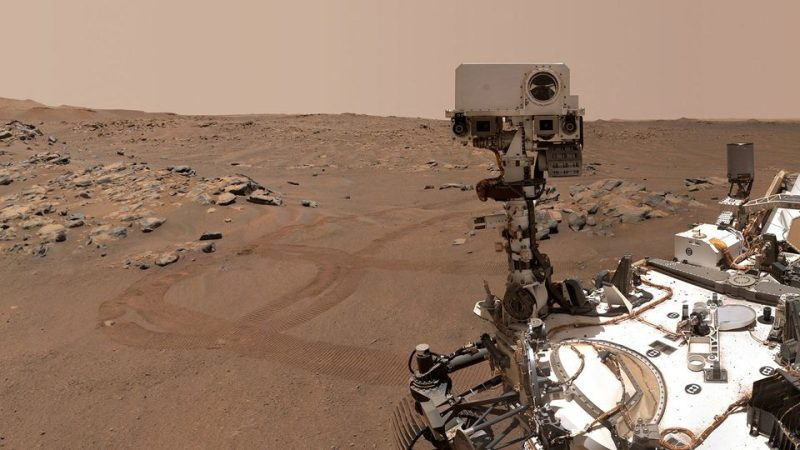

Missions
Artemis Program
NASA aims to land astronauts on the Moon again by 2024 as part of the Artemis program. This ambitious effort will serve as a stepping stone for future missions to Mars and scientific exploration.
Mars Exploration
NASA's Perseverance rover continues to explore the Red Planet, searching for signs of past life. Future missions, including the Mars Sample Return mission, will bring Martian samples back to Earth for further study.
James Webb Space Telescope
The launch of the James Webb Space Telescope promises to revolutionize our understanding of the universe. It will observe the cosmos with unprecedented clarity and depth, potentially unlocking some of the greatest mysteries in astronomy.
Planetary Defense
NASA is committed to protecting Earth from potentially hazardous asteroids and comets. This includes missions like the Double Asteroid Redirection Test (DART) to test our ability to deflect objects in space.
These missions represent just a glimpse of NASA's exciting plans for the future. They offer the promise of new insights, technological breakthroughs, and a continued drive to expand our understanding of the universe. Stay tuned for the latest developments in space exploration!